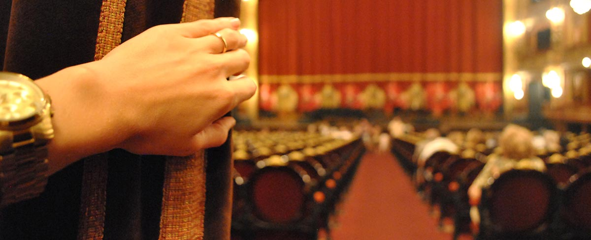
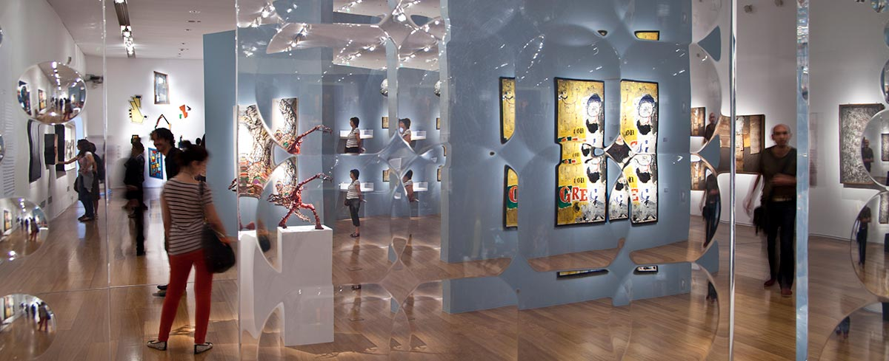
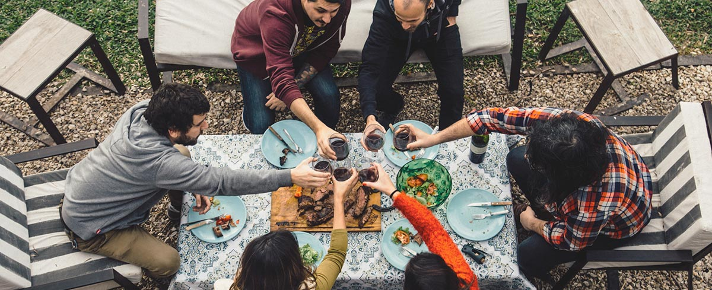

Teatros

Museos

El arte es una de las pasiones de quienes viven en Buenos Aires y sus manifestaciones son tan heterogéneas como lo son sus habitantes. Por eso, es posible encontrar una amplia gama de propuestas artísticas y culturales en la Ciudad.
La Ciudad de Buenos Aires te invita a conocer nuevas propuestas gastronómicas para disfrutar de sabores únicos e imborrables. Grandes restaurantes y bodegones se complementan con espacios al aire libre como el Patio Rodrigo Bueno, donde te podés deleitar con lo mejor de la gastronomía porteña de una manera diferente. Además, no podés perderte las típicas pizzerías de la avenida Corrientes, los tragos de autor de los bares y coctelerías y el asado en nuestras parrillas.
Dentro de los rituales típicos de los porteños, hay uno que tiene mucho que ver con el turismo: se trata de revivir nuestras experiencias mostrando una infinita cantidad de fotos a nuestros familiares y amigos cada vez que volvemos de un viaje, además de compartirlas en vivo a través de las redes. Tal vez por eso, nos esforzamos en ofrecerles a quienes nos visitan la posibilidad de llevarse las mejores imágenes de nuestra ciudad. Para cumplir con ese objetivo, hace pocos meses se inauguraron las escalinatas del Obelisco y del Paseo del Bajo: allí podés subirte a tomar las mejores fotografías de dos de los lugares emblemáticos de Buenos Aires.
Como te dijimos al comienzo, la Ciudad se disfruta en cualquier tipo de viaje, ya sea familiar, con amigos, solo o en pareja. Si tu opción es vivir Buenos Aires en familia, tenés una gran variedad de propuestas para que la edad no sea un impedimento en la diversión: desde el Planetario, reinaugurado hace poco luego de una enorme renovación tecnológica, hasta programas organizados por espacios como la Usina del Arte y el CCK. ¡Empezá ahora!